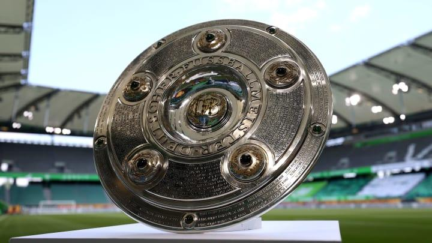

A Bundesliga ocupa um lugar especial no futebol europeu porque combina características que nem sempre aparecem juntas nas principais ligas do continente. O campeonato movimenta bilhões de euros, atrai estrelas internacionais e possui clubes competitivos nas competições europeias, mas ainda preserva arquibancadas populares, associações fortes e uma identidade regional muito marcante.
O Bayern de Munique construiu uma hegemonia sem paralelo na era moderna do futebol alemão. Mesmo assim, a história da Bundesliga não se resume ao clube bávaro. Borussia Dortmund, Borussia Mönchengladbach, Werder Bremen, Hamburgo, Stuttgart, Colônia, Kaiserslautern e Bayer Leverkusen também protagonizaram ciclos importantes.
A competição ainda se diferencia por ter apenas 18 participantes, adotar um sistema de playoff contra o rebaixamento e aplicar a regra do 50+1, criada para preservar o controle dos clubes nas mãos de seus associados.
Como nasceu a Bundesliga
Ela foi criada para organizar o futebol alemão em uma liga nacional unificada. Antes de 1963, o país possuía competições regionais, cujos melhores clubes avançavam para a disputa do título nacional.
A estreia oficial aconteceu em 24 de agosto de 1963, encerrando esse modelo fragmentado e oferecendo à Alemanha Ocidental um campeonato centralizado, com calendário regular e condições melhores para o desenvolvimento técnico e comercial dos clubes.
A primeira edição contou com 16 equipes. O Colônia foi o campeão inaugural, terminando seis pontos à frente do Meidericher SV, atual Duisburg.
O Bayern de Munique não participou da temporada de estreia. O clube só chegou à Bundesliga em 1965/66, mas precisou de poucos anos para iniciar a transformação que o levaria à condição de maior campeão da competição.
O formato do campeonato
A Bundesliga é disputada por 18 clubes, dois a menos do que Premier League, LaLiga e Serie A. O formato produz uma temporada mais curta, mas mantém o sistema tradicional de pontos corridos com jogos de ida e volta.
Os dois últimos colocados são rebaixados diretamente para a Bundesliga 2. O 16º colocado disputa um playoff de ida e volta contra o terceiro colocado da segunda divisão. O vencedor do confronto fica com uma vaga na elite na temporada seguinte.
Esse sistema acrescenta uma decisão depois do encerramento da tabela. Em vez de três rebaixamentos automáticos, como acontece em outras grandes ligas europeias, a Alemanha permite que uma das vagas seja definida em confronto direto.
Os maiores campeões da história
A Bundesliga teve 13 campeões diferentes desde sua criação, em 1963. O Bayern de Munique aparece muito à frente dos demais, enquanto Borussia Dortmund e Borussia Mönchengladbach dividem a segunda posição.
Abaixo a lista completa:
- Bayern de Munique — 34 títulos
- Borussia Dortmund — 5 títulos
- Borussia Mönchengladbach — 5 títulos
- Werder Bremen — 4 títulos
- Hamburgo — 3 títulos
- Stuttgart — 3 títulos
- Colônia — 2 títulos
- Kaiserslautern — 2 títulos
- Bayer Leverkusen — 1 título
- Wolfsburg — 1 título
- Eintracht Braunschweig — 1 título
- Nürnberg — 1 título
- 1860 Munique — 1 título
Atual campeão: Bayern de Munique, vencedor da temporada 2025/26
Existe uma diferença importante entre os títulos da Bundesliga e o total de campeonatos alemães. O Bayern possui 34 conquistas desde a criação da liga, mas soma 35 títulos nacionais quando também é considerado o troféu obtido em 1932, antes da existência da Bundesliga.
A construção da hegemonia
Quando a Bundesliga começou, o Bayern ainda não era o gigante absoluto que se tornaria nas décadas seguintes. O clube sequer foi incluído entre os participantes da primeira edição e estreou apenas na terceira temporada.
O primeiro título veio em 1968/69. A partir daquele momento, diferentes gerações transformaram o clube na maior força do futebol alemão.
Títulos do Bayern por período:
- Anos 1960 — 1968/69
- Anos 1970 — 1971/72, 1972/73, 1973/74 e 1979/80
- Anos 1980 — 1980/81, 1984/85, 1985/86, 1986/87, 1988/89 e 1989/90
- Anos 1990 — 1993/94, 1996/97, 1998/99 e 1999/2000
- Anos 2000 — 2000/01, 2002/03, 2004/05, 2005/06, 2007/08 e 2009/10
- De 2010 a 2019 — 2012/13, 2013/14, 2014/15, 2015/16, 2016/17, 2017/18, 2018/19 e 2019/20
- De 2020 a 2026 — 2020/21, 2021/22, 2022/23, 2024/25 e 2025/26
A relação mostra que a hegemonia não surgiu em um único período. O Bayern conseguiu vencer em diferentes contextos, com mudanças de treinadores, dirigentes, estilos de jogo e gerações de jogadores.
O auge da sequência aconteceu entre 2012/13 e 2022/23, quando o clube conquistou 11 temporadas consecutivas. O domínio só foi interrompido pelo Bayer Leverkusen em 2023/24.
O atual título
O Bayern confirmou o 34º troféu da Bundesliga em 20 de abril de 2026, ao derrotar o Stuttgart por 4 a 2 na Allianz Arena. A conquista foi assegurada na 30ª rodada, com quatro jogos de antecedência.
O Stuttgart abriu o placar com Chris Führich, mas o Bayern virou com Raphaël Guerreiro, Nicolas Jackson, Alphonso Davies e Harry Kane. Chema Andrés descontou para os visitantes no fim da partida.
A equipe comandada por Vincent Kompany terminou a Bundesliga com 89 pontos. O grande destaque foi o ataque: o Bayern marcou 122 gols e estabeleceu um novo recorde da competição. Harry Kane terminou como artilheiro pelo terceiro ano consecutivo, com 36 gols.
Foi ainda o 13º troféu do Bayern nas últimas 14 temporadas.
A disputa pela segunda posição
Borussia Dortmund e Borussia Mönchengladbach são os clubes que mais se aproximam do Bayern na lista de campeões da Bundesliga, com cinco títulos cada.
Títulos do Borussia Dortmund:
- 1994/95
- 1995/96
- 2001/02
- 2010/11
- 2011/12
O Dortmund viveu dois ciclos marcantes. O primeiro aconteceu na década de 1990, quando conquistou dois campeonatos consecutivos antes de vencer a Champions League de 1996/97.
O segundo foi construído por Jürgen Klopp. Com um time jovem, intenso e agressivo na pressão, o Dortmund venceu a Bundesliga em 2010/11 e repetiu a conquista em 2011/12. O último título também encerrou a temporada com recorde de 81 pontos para o clube.
Títulos do Borussia Mönchengladbach:
- 1969/70
- 1970/71
- 1974/75
- 1975/76
- 1976/77
O Gladbach conquistou seus cinco troféus durante a década de 1970. Naquele período, o clube dividiu o protagonismo nacional com o Bayern e apresentou algumas das equipes mais ofensivas da história do futebol alemão.
Demais campeões
O Werder Bremen aparece logo depois, com quatro conquistas. O clube foi campeão em 1964/65, 1987/88, 1992/93 e 2003/04.
A campanha de 2003/04 é especialmente lembrada. Sob o comando de Thomas Schaaf, o Werder venceu a Bundesliga e a Copa da Alemanha, completando uma dobradinha nacional.
Hamburgo e Stuttgart possuem três títulos cada na era Bundesliga.
Títulos do Hamburgo:
- 1978/79
- 1981/82
- 1982/83
Títulos do Stuttgart:
- 1983/84
- 1991/92
- 2006/07
O Hamburgo viveu seu período mais forte entre o fim dos anos 1970 e o começo dos anos 1980. Além dos títulos nacionais, conquistou a antiga Copa dos Campeões da Europa em 1982/83.
O Stuttgart teve ciclos mais espaçados. Sua conquista mais recente veio em 2006/07, com uma equipe jovem que cresceu durante a temporada e superou Schalke e Werder Bremen na disputa pelo título.
A temporada invicta
O Bayer Leverkusen conquistou seu primeiro título da Bundesliga em 2023/24, encerrando a sequência de 11 troféus consecutivos do Bayern.
Comandado por Xabi Alonso, o Leverkusen terminou as 34 rodadas sem perder. Foram 28 vitórias, seis empates e 90 pontos, além de 89 gols marcados.
A equipe se tornou a primeira da história a completar uma temporada inteira da Bundesliga de maneira invicta. O título foi confirmado com uma goleada por 5 a 0 sobre o Werder Bremen, na BayArena, ainda na 29ª rodada.
O Leverkusen também venceu a Copa da Alemanha naquela temporada. A campanha mostrou que o domínio do Bayern poderia ser interrompido por um projeto capaz de combinar planejamento, trabalho técnico, contratações eficientes e continuidade.
O troféu em forma de “roda”
Diferentemente das taças tradicionais, com base elevada, corpo vertical e alças, o campeão da Bundesliga recebe um troféu circular. Meisterschale significa “prato” ou “salva do campeão”, embora o formato também tenha rendido o apelido popular de “saladeira”. A peça foi criada em 1949 pela ourives e professora de arte Elisabeth Treskow, com a participação de alunos das Escolas de Artes de Colônia. Ela substituiu a antiga taça Viktoria, desaparecida durante a Segunda Guerra Mundial.
A Meisterschale reúne os nomes de todos os campeões alemães desde 1903, gravados ao redor de sua estrutura. Por isso, novos anéis precisaram ser acrescentados ao longo do tempo, incluindo uma ampliação em 2026 para abrir espaço às futuras conquistas.O desenho transformou a peça em uma obra de ourivesaria única no futebol europeu e em um dos símbolos mais reconhecidos do campeonato alemão.
A força financeira da liga
A Bundesliga também ocupa uma posição importante na economia do futebol europeu. O campeonato arrecada menos do que a Premier League, mas possui uma operação bilionária sustentada por direitos de transmissão, publicidade, transferências, bilheteria e comercialização de produtos.
Os números financeiros completos da temporada 2025/26 ainda dependem da publicação dos balanços de todos os clubes. O relatório consolidado mais recente corresponde a 2024/25.
Naquela temporada, os 18 clubes da Bundesliga movimentaram €5,12 bilhões em receitas, superando pela primeira vez a marca de €5 bilhões. O crescimento foi de 6,7% em relação ao exercício anterior.
Principais fontes de receita da Bundesliga em 2024/25:
- Direitos de mídia — €1,70 bilhão
- Publicidade e patrocínios — €1,15 bilhão
- Transferências de jogadores — €872,6 milhões
- Bilheteria e receitas de jogos — €599 milhões
- Merchandising e outras receitas — aproximadamente €802 milhões
Os clubes da primeira divisão terminaram o período com lucro conjunto de €242,1 milhões. Treze das 18 equipes apresentaram resultado positivo depois dos impostos, e todas registraram resultado operacional positivo antes de juros, impostos, depreciação e amortização.
Somadas, Bundesliga e Bundesliga 2 movimentaram €6,33 bilhões em 2024/25. As duas divisões ainda venderam quase 21 milhões de ingressos, outro sinal da capacidade econômica e popular do futebol alemão.
Direitos de transmissão
A temporada 2025/26 marcou o começo de um novo ciclo nas transmissões no mercado de língua alemã.
Entre 2025/26 e 2028/29, os 36 clubes da Bundesliga e da Bundesliga 2 dividirão €1,121 bilhão por temporada em receitas provenientes dos direitos nacionais. O contrato completo está avaliado em €4,484 bilhões ao longo de quatro anos.
A Bundesliga comercializa os direitos de forma centralizada, mas o dinheiro não é distribuído apenas de acordo com a classificação final de uma temporada. O cálculo considera diferentes critérios, como desempenho acumulado, posição recente, formação de jovens jogadores e componentes de igualdade entre os participantes.
Por isso, não existe um prêmio único e isolado entregue ao campeão apenas por levantar a Meisterschale.
Quanto o Bayern recebeu pelo último título
O clube ficou com a maior faixa da distribuição ligada ao desempenho, mas o repasse da DFL também levou em consideração resultados de temporadas anteriores.
Antes do início da edição 2025/26, a receita doméstica de televisão destinada ao Bayern foi estimada em aproximadamente €83,4 milhões. O valor não representa apenas o título e não inclui direitos internacionais, bilheteria, patrocínios próprios, venda de produtos ou premiações da Champions League e da Copa da Alemanha.
Essa diferença é importante para evitar comparações imprecisas. A renda total de um campeão é muito maior do que o pagamento central da televisão, mas não existe uma única quantia que possa ser apresentada como “prêmio pelo título”.
Controle financeiro e licenciamento dos clubes
A Bundesliga não utiliza exatamente o mesmo sistema de controle financeiro da Premier League. Na Alemanha, a estabilidade econômica é acompanhada principalmente pelo processo anual de licenciamento da DFL.
Para participar da Bundesliga ou da Bundesliga 2, cada clube precisa apresentar documentos financeiros e demonstrar que possui condições de cumprir suas obrigações durante toda a temporada. A avaliação busca reduzir o risco de insolvência, salários atrasados ou abandono do campeonato.
O licenciamento também analisa critérios:
- Financeiros
- Jurídicos
- Administrativos
- Esportivos
- Estruturais
- De segurança
- De sustentabilidade
Os clubes classificados para as competições europeias ainda precisam cumprir as regras de sustentabilidade financeira da Uefa. Desde 2025/26, despesas com salários de jogadores e treinadores, amortizações de transferências e comissões de agentes não podem ultrapassar 70% das receitas consideradas no cálculo da entidade.
A regra do 50+1
Esse é um dos principais elementos da identidade da Bundesliga. Ela determina que a associação de membros do clube mantenha a maioria dos direitos de voto na empresa responsável pelo departamento de futebol.
Na prática, os associados precisam controlar 50% dos votos mais um. Isso impede que um investidor externo assuma sozinho o comando político e administrativo de uma equipe.
O modelo não proíbe investimentos privados. Empresas e empresários podem adquirir participações, financiar projetos e integrar estruturas societárias. O controle final, porém, deve permanecer com a associação do clube.
No Bayern, por exemplo, a equipe profissional é administrada pelo FC Bayern München AG. A associação de membros controla 75% da empresa, enquanto Adidas, Audi e Allianz possuem participações minoritárias.
Leverkusen e Wolfsburg são casos especiais devido à relação histórica e prolongada com Bayer e Volkswagen. Essas estruturas receberam exceções previstas pelo regulamento.
A regra do 50+1 não é um mecanismo de fair play financeiro nem um teto de gastos. Sua função principal é controlar a propriedade e os direitos de voto. Ainda assim, ela influencia a forma como os clubes são administrados, dificultando modelos baseados exclusivamente na vontade de um único proprietário.
A cultura de torcida como marca
Poucas ligas de elite são tão associadas às arquibancadas quanto a Bundesliga. A relação entre clubes, sócios e comunidades ajuda a explicar a atmosfera encontrada em estádios como Signal Iduna Park, Allianz Arena, Volksparkstadion, RheinEnergieStadion, Weserstadion e Borussia-Park.
O Borussia Dortmund é o maior símbolo dessa cultura. O Signal Iduna Park recebe mais de 81 mil torcedores, e a Südtribüne, conhecida como Muralha Amarela, é uma das maiores arquibancadas populares da Europa.
Os preços também ajudam a manter os estádios acessíveis. Para a temporada 2025/26, os planos anuais mais baratos custavam €150 no Hoffenheim, €160 no Wolfsburg e €175 no Bayern. No caso do clube de Munique, o preço representava pouco mais de €10 por partida da Bundesliga.
Além disso, muitos estádios alemães preservam setores em pé em jogos nacionais. Esse modelo aumenta a capacidade, mantém ingressos de menor valor e contribui para uma atmosfera mais intensa.
Uma liga com alcance mundial
A Bundesliga deixou de ser uma competição acompanhada apenas na Alemanha. A DFL possui acordos com emissoras e plataformas em diferentes regiões da Europa, América, Ásia, África, Oriente Médio e Oceania.
Em partidas de grande apelo, o alcance se aproxima de todo o mercado internacional do futebol. O confronto entre Bayern e Borussia Dortmund, por exemplo, foi exibido em mais de 200 territórios vinculados à Fifa, com emissoras de diferentes continentes produzindo conteúdos diretamente do estádio.
Esse alcance aumenta a importância comercial dos clubes. Também permite que a liga explore transmissões personalizadas, publicidade virtual, conteúdos em diferentes idiomas e produtos digitais voltados a mercados específicos.
A Bundesliga ainda está distante da Premier League em receitas internacionais de televisão. Mesmo assim, a combinação entre jogadores reconhecidos mundialmente, clubes tradicionais e atmosfera de estádio mantém o campeonato como uma das principais propriedades esportivas da Europa.
Rivalidades que sustentam a competição
Os clássicos nacionais e regionais que ajudam a manter o campeonato conectado às diferentes partes da Alemanha.
Bayern de Munique e Borussia Dortmund protagonizam o Der Klassiker, duelo que ganhou dimensão internacional principalmente depois das disputas por títulos na década de 2010.
Borussia Dortmund e Schalke fazem o Revierderby, uma das rivalidades mais intensas do país. O confronto representa cidades e comunidades profundamente ligadas à região industrial do Ruhr.
Colônia e Borussia Mönchengladbach disputam um dos principais dérbis da Renânia. Hamburgo e Werder Bremen formam o Nordderby. Bayern e 1860 Munique representam a rivalidade da capital bávara, embora o encontro tenha se tornado raro devido à distância esportiva entre os clubes.
Esses jogos mostram que a Bundesliga não depende apenas da disputa pelo título. Parte importante do campeonato está na identidade local, nas rivalidades históricas e no significado que cada clube possui dentro de sua região.
Por que a Bundesliga continua relevante
Permanece entre as principais ligas do futebol porque consegue unir poder econômico, formação de jogadores, organização e forte participação popular.
A hegemonia do Bayern é evidente e representa um desafio para o equilíbrio esportivo. Mesmo assim, a campanha invicta do Bayer Leverkusen mostrou que projetos bem construídos ainda podem alterar a ordem da competição.
Além da Bundesliga, o calendário nacional também reserva espaço para a Copa da Alemanha.
Para quem acompanha os diferentes modelos do futebol europeu, a comparação com a história da Premier League ajuda a entender dois caminhos distintos. A Inglaterra construiu a liga nacional mais rica e internacionalizada do planeta, enquanto a Alemanha manteve maior controle associativo, preços mais acessíveis e uma cultura de arquibancada especialmente forte.
No fim, é isso que faz a Bundesliga ser mais do que uma competição marcada pelo domínio do Bayern. A liga continua relevante porque a força do maior campeão convive com clubes históricos, cidades mobilizadas, modelos próprios de gestão e uma das relações mais intensas entre torcida e futebol no cenário mundial.